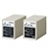
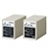
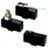
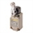
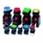
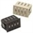

Building Automation
Industrial Automation
Power Automation & Safety


Bangladesh Distributor
- Home
- Products
- Contact Us
Switches
OMRON provides Basic Switches that operate when objects reach specific locations and Pushbutton Switches operated by people.
 Level Switches

Level Switches

These devices equip electrodes to detect liquid levels. They have been widely used in water works and sewers for buildings and housing complexes, industrial facilities and equipment, water treatment plants and sewage treatment facilities, and many other applications.
Basic Switches

Basic Switches have a micro contact gap and operate at the specified movement and force using a snap-action mechanism. They are available in models with split contacts, maintained operation, drip-proof specifications, high capacity, and DC current specifications.
Limit Switches

Limit Switch are basic switches that have been encased to protect them from external forces, water, oil, and dirt. Many models are available, such as those resistant to head, cold, or corrosion, as well as high-precision models.
Push Buttons / Indicator Lamps

Push Button Switches are manually operated switches that are available in many different types: Switches with round or square bodies for mounting in round or square holes, lighted and non-lighted Switches, Indicators, Selector Switches, and more.
Thumbwheel Switches

With Thumb Rotary Switches, a character dial is turned to switch an actuator and set a value. They are also called digital switches. OMRON provides many models with different sizes and operation methods.
Related Contents
© Copyright Kyoto Engineering & Automation Ltd. All Rights Reserved.